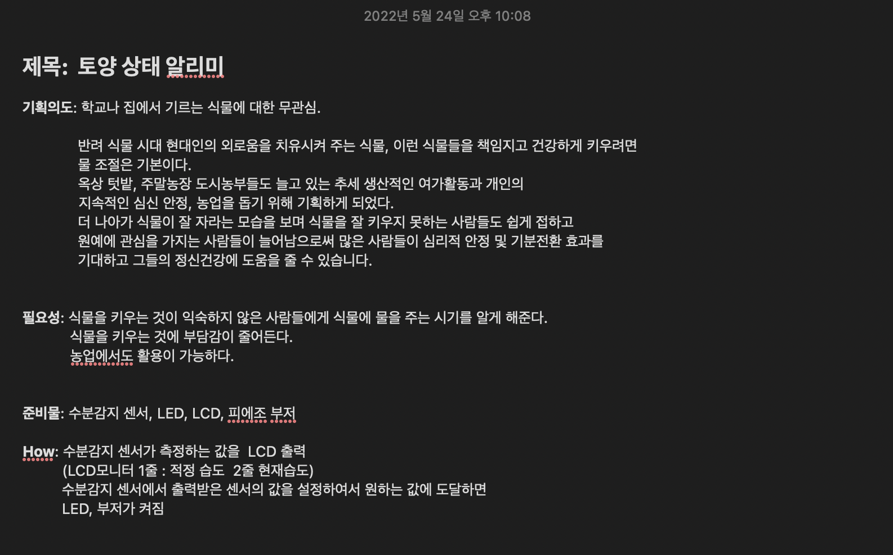
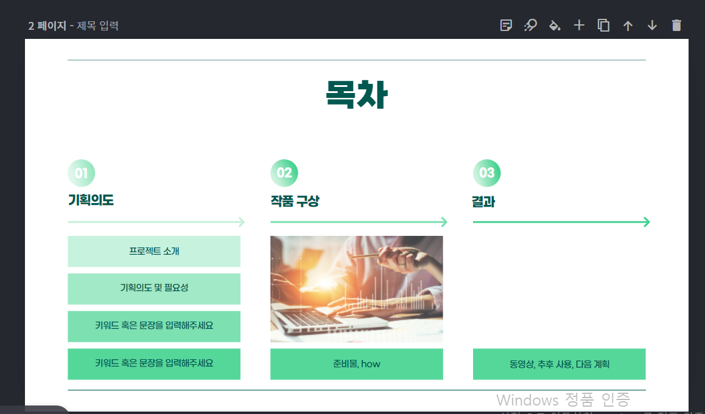
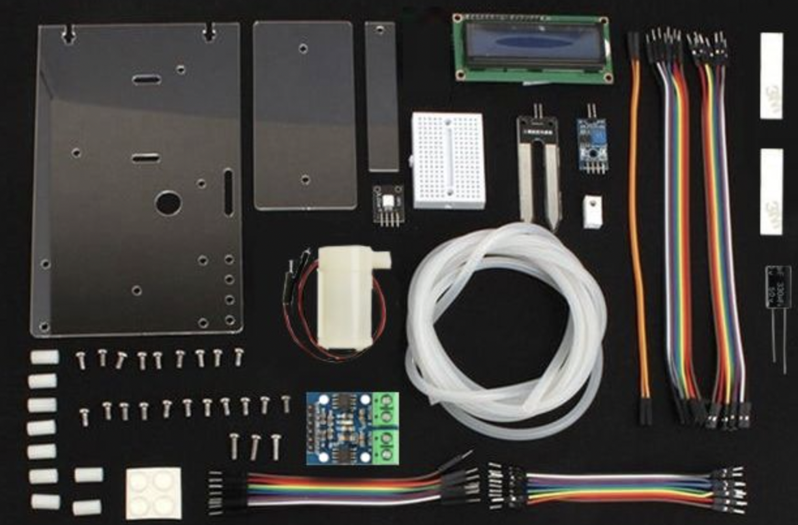
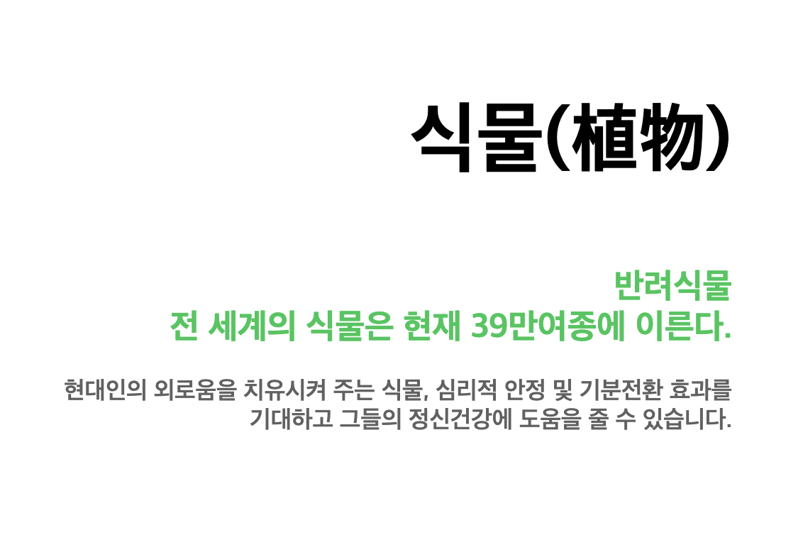
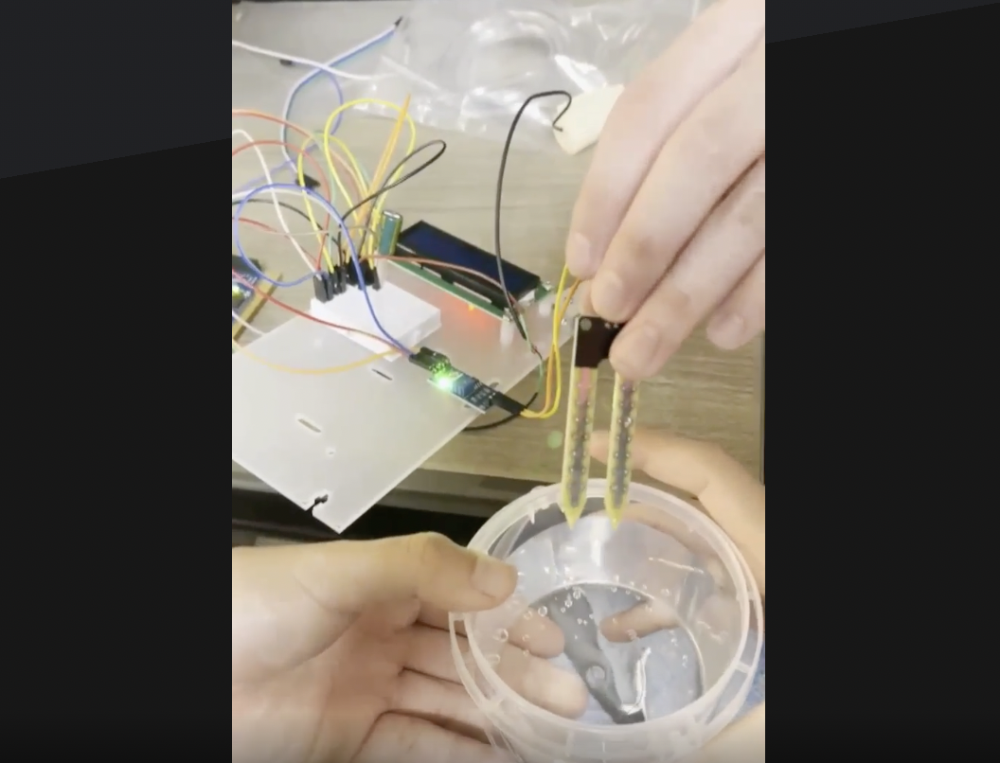
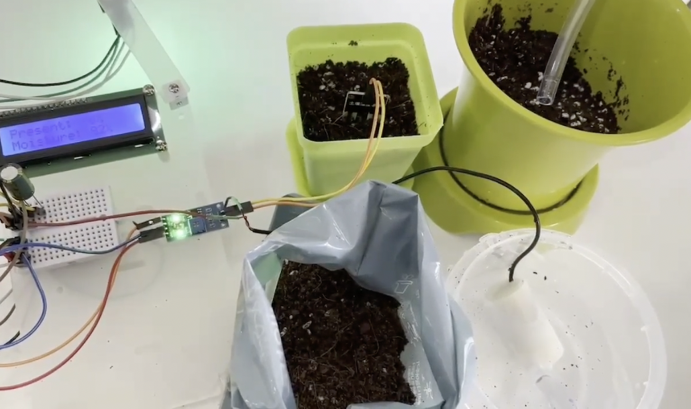
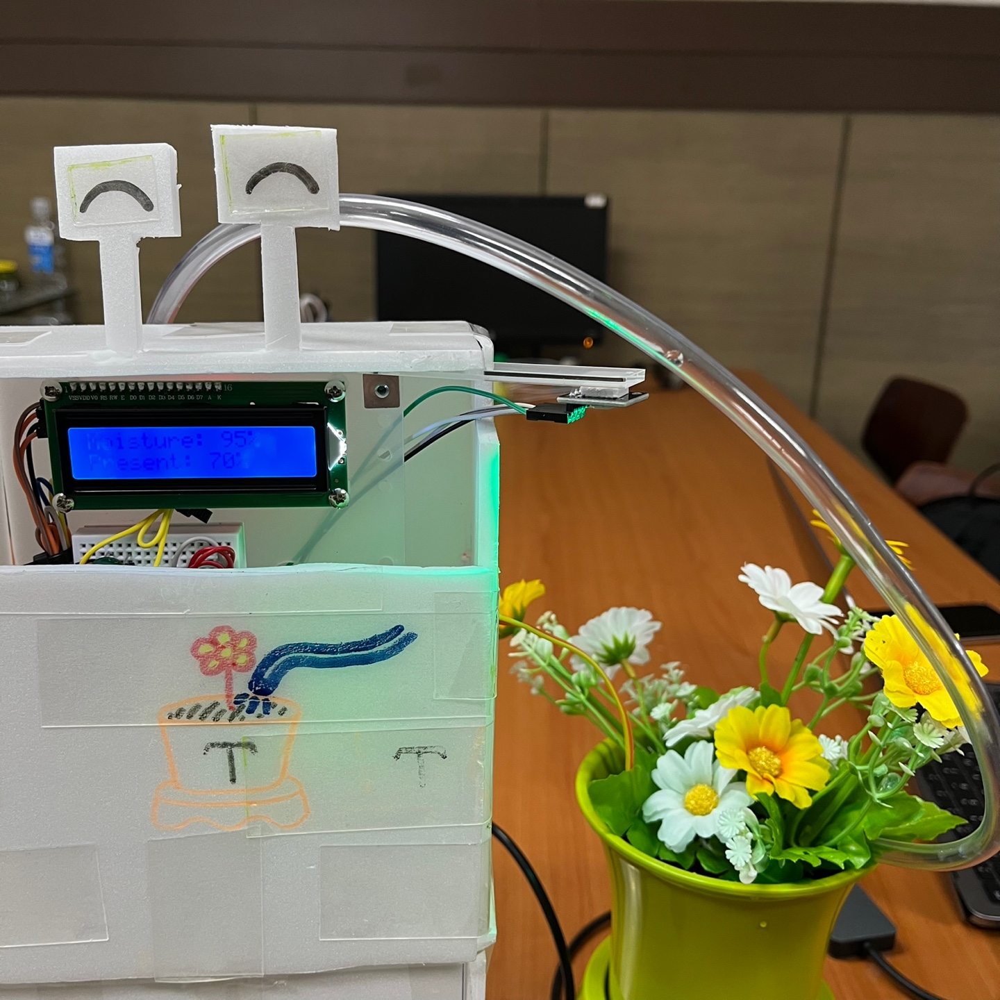

Project History

- 2022.05.24
- 통합기말과제를 만들기위한 주제를 선정하고, 주제의 필요성과 기획의도를 정했다.

- 2022.05.26
- 조원과 함께 주제발표 때 쓸 PPT의 기본 틀을 잡고, 최종 발표 기간까지 시간을 어떻게 효율적으로 활용하여 과제 수행을 할 지 계획을 세웠음 수분공급을 어떻게 할 것인지 조원들과 다양한 의견을 제시해보았고, 그 중 제일 실현 가능성이 높고, 기간 안에 수행 할 수 있는 현실적인 방법이라고 판단한 '호스로 흙에 수분을 공급하는 방식'으로 수분 공급을 하기로 결정하였음

- 2022.05.27
- 필요한 준비물들이 도착하여 간단하게 조립을 해보았음 주제발표에 쓸 PPT를 완성하고, 발표 부분을 정하였음 웹페이지의 메인화면을 구상하고, 주제와 어울리는 자연적인 색인 연두색 계열로 웹페이지의 메인 색을 정하였음

- 2022.05.31
- PPT를 최종점검 하고, 발표자(조상원)는 PPT의 흐름과 순서를 외우고 발표를 어떤식으로 이해하기 쉽게 우리의 주제를 전달할 지 대본을 작성 TinkerCad에 릴레이 모듈이 없어서 사진을 첨부하여 PDF로 회로도를 만들었음

- 2022.06.02
- 보고서 웹페이지의 디자인 컨셉, 구조 정하기

- 2022.06.03
- 아누이노 코드를 완성하여 잘 동작 하는지 테스트를 해봤음(혹시 물이 많이 나와서 주변에 물이 넘칠까봐 강의실 환경을 위해 물은 없이 테스트를 진행) 테스트 결과: 처음에 토양 수분 감지센서가 제대로 감지를 하지 못하여 문제점을 찾아보니 회로도에 이상이 있어서 수정하였음. 그 이후로 토양 수분 감지센서는 잘 동작하였고, 다음주에는 물까지 써서 토양에 물이 전부 흡수되는데까지 걸리는 시간, 토양의 습도당 얼마 만큼의 물을 공급해줘야 하는지를 측정하기로 계획하였음 중간발표 PPT의 발표흐름과 우리가 전하고자 하는 내용의 핵심을 정리하여 중간발표 PPT의 기반을 잡았음
- 2022.06.07
- 저번주에 테스트를 해보고 나서 조금 더 추가 할 내용들과 제대로 안되었던 점을 보완하여 재작성한 코드로 다시 테스트를 해보았음 (RED 색 변환 기능, LCD모니터에 항상 백라이트가 켜져있게 수정) 기존 작품 이름인 '토양 상태 알리미'는 수분공급을 해주는 기능을 담지 못하는 이름이라고 느껴 부적합하다고 판단하였음. 그래서 토양의 수분 상태를 감지하고, 수분 공급까지 해준다는 것까지 알 수 있는 이름인 '토양 상태 알리미' → '토양 자동 급수 장치'로 변경 하였음. PPT를 임시 완성하였고, 서로 부족한부분과 없어도 될 부분을 의논하여 수정 후, PPT 최종본을 완성 하였음. 웹페이지의 구성과 디자인을 만들었으며, 웹페이지에 들어갈 사진을 일부 촬영하였음 (다 같이 모일 시간이 없었기에 효율적인 시간 활용을 위해 아두이노 코드, PPT, 웹페이지는 역할을 분배하여 집에서 각자 만들어 왔음. 만든 후 다같이 모여서 부족한 부분을 피드백을 하는 형식으로 진행)

- 2022.06.10
-
흙이랑 물을 사용하여 테스트를 해보았음.
그 결과, 원래 0.4초간 물을 내보내게 코딩을 했었는데 막상 테스트를 해보니 물이 호스를 타고 흐르는 시간을 미처 생각하지 못해서 처음에는 물이 호스를 타고 흘러가는 도중에 작동이 멈췄음. 그래서 물을 공급하는 시간을 2초로 늘림. 선이 너무 복잡하게 흐트려져 있어서, 선정리를 하고 LCD모니터 밑부분을 덮어서 보기 좋게 외관 디자인에 신경을 써보자고 결정 LCD모니터가 잘 될때도 있는 반면에, 제대로 출력이 안되는 경우도 많았음. 전력을 조정해봐도 같은 현상이 일어나서, 부품 불량이거나 저렴한 모델이라 이러한 문제가 발생하는 것으로 파악함. 우리가 수업시간에 쓰던 LCD모니터를 쓰기에는 아두이노 UNO에 선을 꽃을 곳이 부족해서, 같은 모델을 재주문 해보기로 결정 일정 조율이 힘들어서 주말에 각자 집에서 역할을 분담하여 수행 후, 다시 모여서 피드백을 하기로 결정(선정리, 테스트 영상 편집, 웹페이지 내에 들어갈 내용, 웹페이지 디자인 보완 등등)

- 2022.06.17
- 작품의 외관디자인을 했고, 최종영상을 촬영하였음 (LCD모니터가 잘되다가도 갑자기 안되는 경우가 종종 있었음) 웹페이지의 카테고리에 History탭을 추가하여, 이때까지 우리 조가 작품을 만들면서 있었던 과정들을 볼 수 있게 구성하였음 최종발표 때 진행흐름과 전달해야 할 키워드들을 정리하였고, 각자 집에서 영상편집, 웹페이지 최종 완성을 하기로 하였음